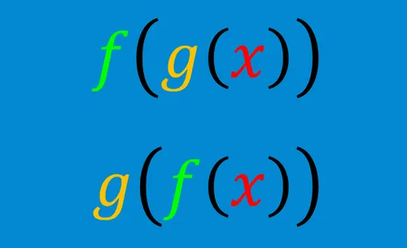
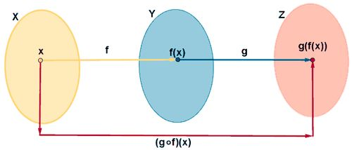

Las funciones son una forma de transformar valores, pero cuando empiezas a combinarlas, es donde se ponen mas waaahhh mas de miedo mas de wawa (eso te harán creer). La composición de funciones permite encadenar procesos, o más bien, usar el resultado de una función como entrada de otra. Esto en programación y mate es muy util, porque muestra cómo una idea pasa por muchas etapas hasta llegar a un resultado final. Entender esta cosa te ayuda a ver las funciones no como cosas aisladas, cosas solas y aburridas, sino como partes geniales de un sistema que trabaja en un genial conjunto.
Leer más »
Es como cuando aplicas una función y luego usas su resultado como entrada de otra.
Como ejemplo: g(x) = x + 2, f(x) = x^2
Entonces:
f(g(x)) = (x + 2)^2
Primero haces g(x), luego ese resultado lo metes en f.

No es lo mismo:
f(g(x))
que:
g(f(x))
Como ejemplo:
f(g(x)) = (x + 2)^2
g(f(x)) = x^2 + 2
Son diferentes jeje cambiar el orden cambia todo.
Regla simple:
1. Toma la función de adentro.
2. Sustitúyela en la de afuera.
3. Simplificalo y ya :v
Como ejemplo:
f(x) = 3x
g(x) = x - 1
f(g(x)) = 3(x - 1) = 3x - 3
No es muy muy complicado, solo reemplaza y simplifica jeje